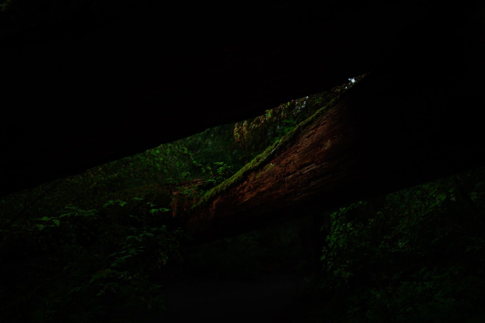
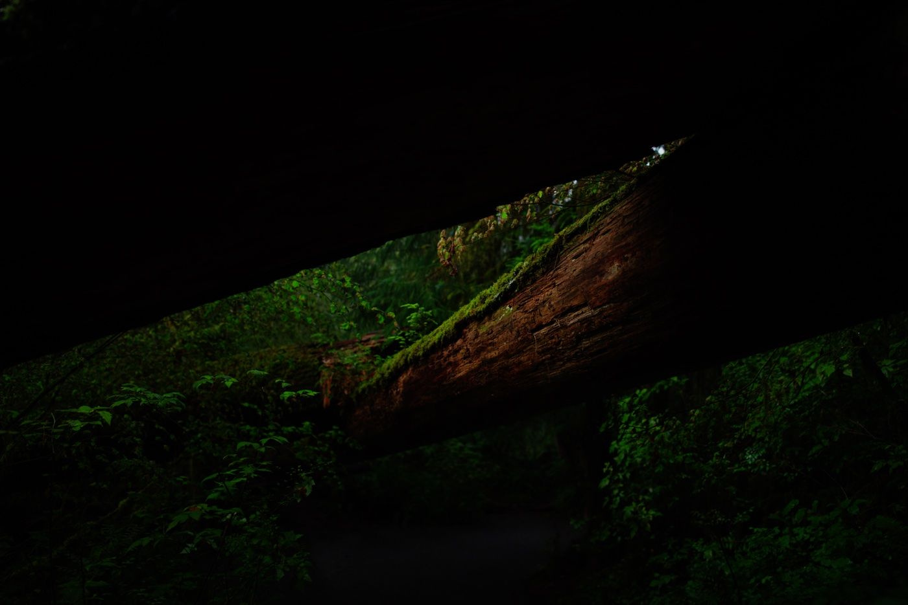
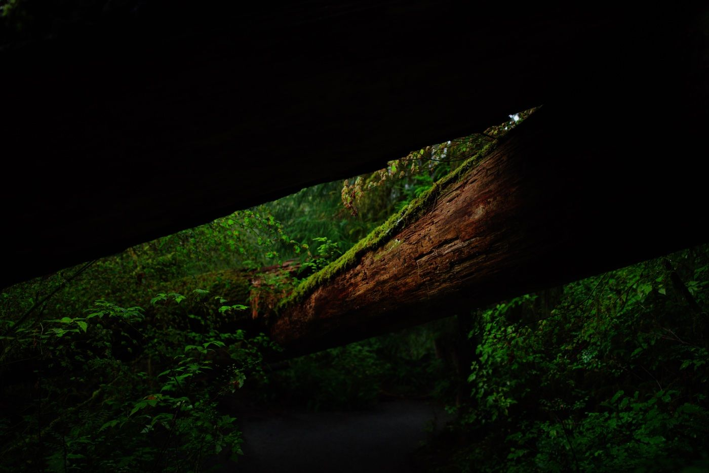
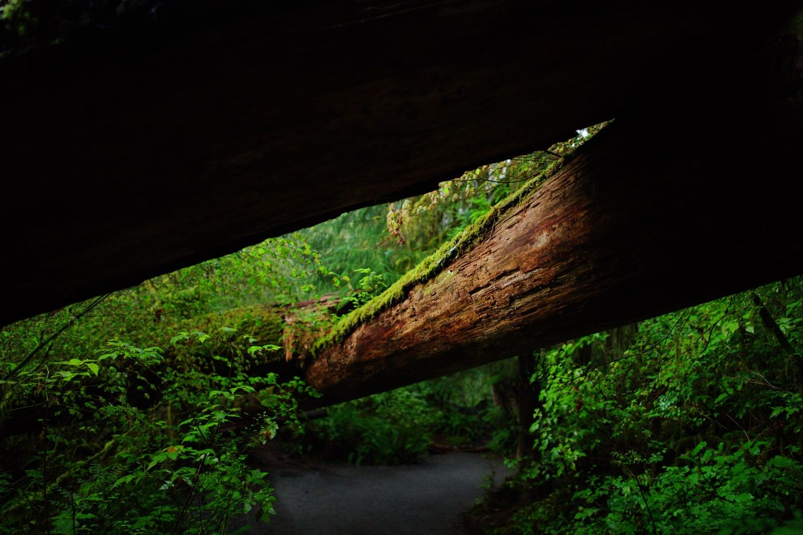
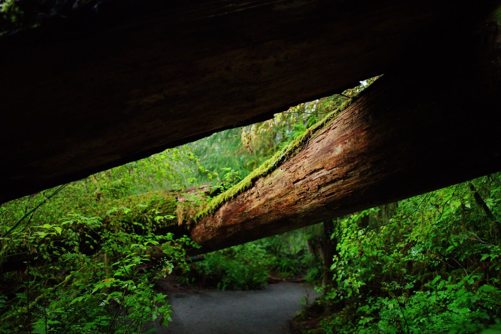
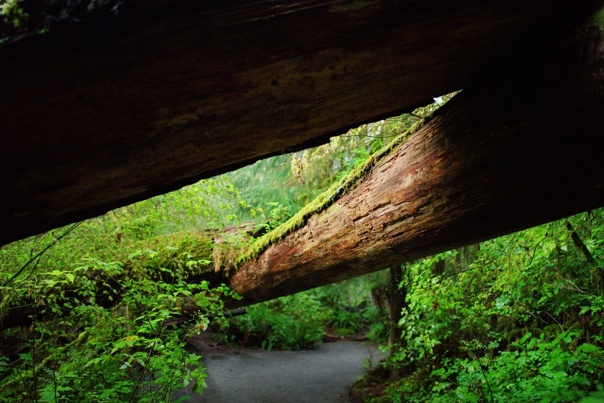

Alpha · macOS
Fast RAW editing for free
A photo editor for Apple silicon Macs that renders every slider move at full resolution. No subscription, no account.
- Histogram with clipping warnings
- Light: exposure, contrast, white balance
- Masks: radial, linear, brush, subject, sky
- Compare with the frame as shot
- Export to JPEG, TIFF or PNG
- Filmstrip: the whole folder, rated
- 18.9 msper slider move, at 42 MP
- 1,558lenses corrected
- 0subscriptions or accounts
- 2 KBsidecar of edits per photo
Every slider move, at full resolution
95th percentile over an exposure drag on a 42 MP Sony A7R III raw file, on a MacBook Air M4.






Exposure
Everything your camera caught
Opens raw files from most cameras and corrects 1,558 lenses. Exports JPEG, TIFF and PNG.


Your originals stay untouched
Edits live in a small text file beside the photo. Nothing is uploaded.
DSC09787.ARW
DSC09787.xmp
In the current build
Tone and color
- Exposure, contrast, highlights, shadows, whites, blacks
- White balance, color grading, tone curves
- Film looks from any
.cubefile - One-click auto-enhance
Detail and repair
- Haze removal, clarity, shadow recovery
- Noise reduction, sharpening, color mixer
- Spot and blemish removal
- Film grain, and a vignette you can dial in
Geometry
- Crop, straighten, rotate
- Distortion and vignetting for 1,558 lenses
- Perspective and keystone correction
Masking
- Gradient, radial, brush, brightness and color masks
- Selecting a subject, a person or a sky
- Masks combined (add, subtract, intersect) and feathered to real edges
Library
- Browsing a folder of 300 frames without waiting on it
- Saved versions of a photograph, to come back to later
- Presets, and copying settings between photos
Export
- Export at 8 or 16 bits, resized, sharpened for screen or print
- Export with your location stripped by default
Not yet
- Highlight reconstruction: the region fill runs and has a slider, but the detail transfer and the edge falloff are not built
- Fujifilm X-Trans sensors
- Windows
- An assistant that proposes edits for you to approve
Every filter is built from a published paper. Read the sources.

Try the alpha
Free to download, no account to make, and the source is on GitHub.